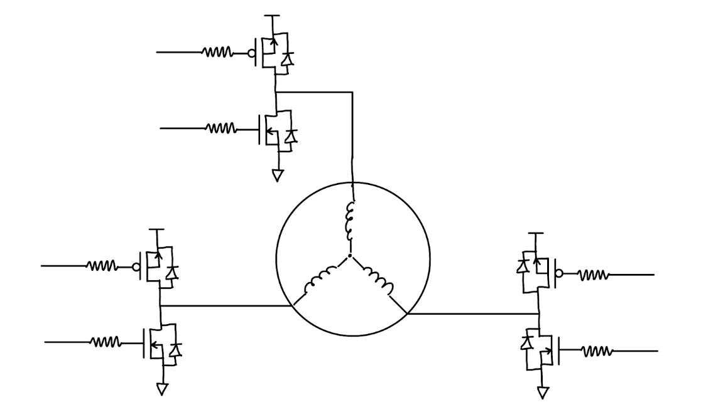
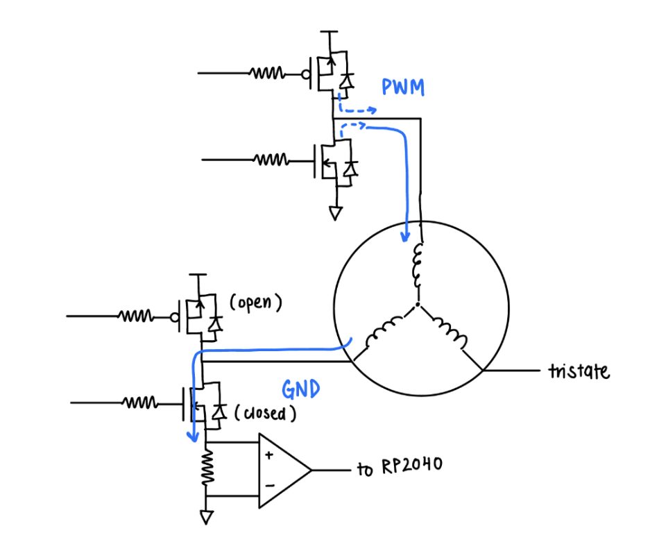
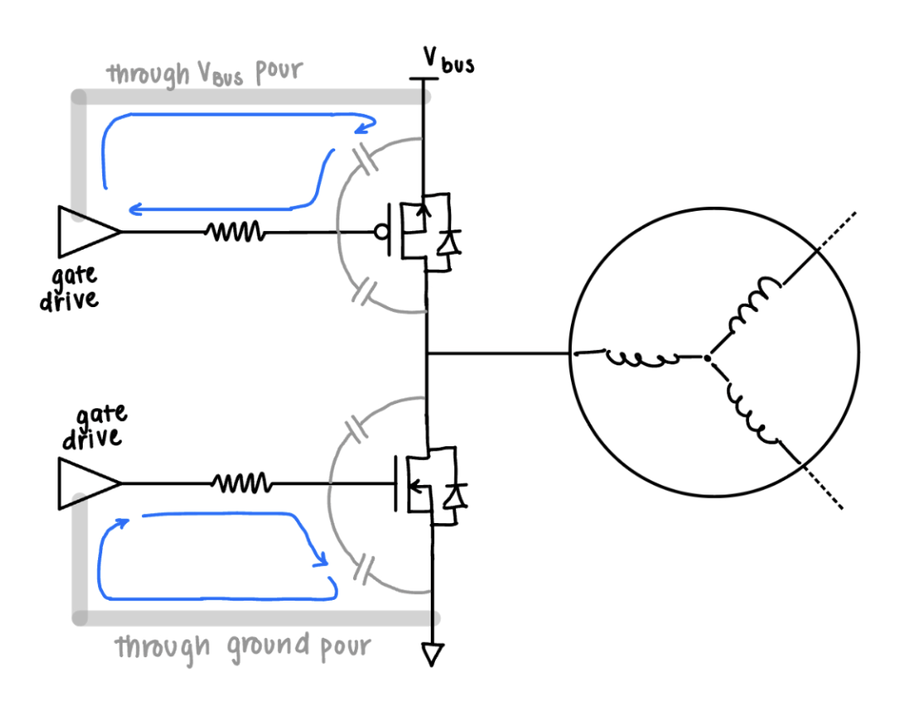
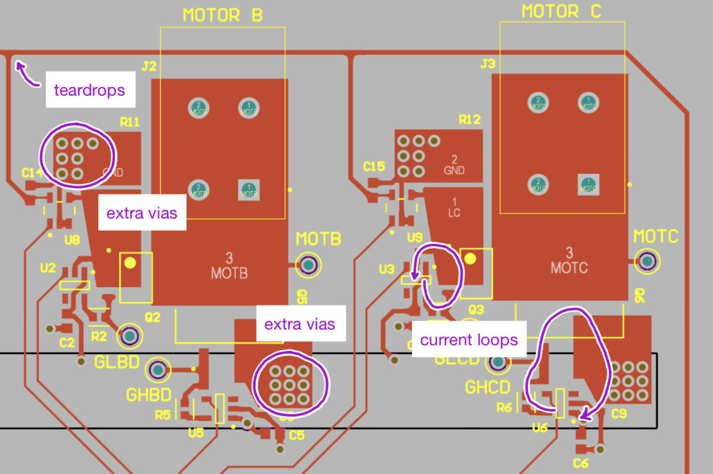

2. Electrical Design
2.1 Circuitry & Component Selection
Our PCB involves four major components:
- The half bridges to drive each phase of the motor.
- Pull-up resistors for the open-drain hall effect sensors.
- Current sensors on the low side of each half-bridge.
- Terminals and headers to connect the motor phases, hall effect sensors, Raspberry Pi Pico, and the half bridges.
We first chose the MOSFETs for our half bridges, informed by our motor specifications. Upon researching typical BLDC motor driver half bridges, we discovered that most designs opted to use N-channel MOSFETs on both the upper and lower side of the half bridge. This is on account of the nature of N-channel MOSFETs being typically more cost-effective and efficient, with less switching losses than P-channel MOSFETs. The primary downside to this would be that a bootstrap circuit would be necessary to drive the upper-side N-channel MOSFET, which complicates our circuitry and introduces more complexity in our switching mechanism. Although the positive factors of using the N-channel—particularly the factor of minimized switching losses—would be significant in circumstances where the motor is driven with significant power, we intend to drive our motor with relatively little power. Therefore, we opted to use P-channel MOSFETs on the upper side and N-channel MOSFETs on the lower side.
Figure 5. Three phase motor driven by half bridges. Each half bridge consists of a high-side P-channel MOSFET and a low-side N-channel MOSFET.
Neither of us are familiar with developing PCBs, so we decided to choose a low-power motor rated for 15 W. Our motor has a rated voltage of 12 V and a rated current of 1.9 A. Because the rated current is not necessarily the peak current, we decided to size all of our components for 6 A of current. Beyond rated currents for components, we looked into the thermal characteristics of the MOSFETs in particular, through which the greatest current would be drawn.
Infineon IRF4905STRLPBF P-MOSFET
Electrical: RDS(on) = 20 mΩ → P = I2R = (6)2 (0.02) = 0.72 W
Thermal: RθJA = 40 °C / W → T = TA + PR = 25 + (0.72) (40) = 53.8 °C
Infineon IRF8788TRPBF N-MOSFET
Electrical: RDS(on) = 2.8 mΩ → P = I2R = (6)2 (0.0028) = 0.1008 W
Thermal: RθJA = 50 °C / W → T = TA + PR = 25 + (0.1008) (50) = 30.04 °C
Primarily based on these thermal characteristics, we chose the two listed MOSFETs to make up our half-bridge.
In addition to the MOSFETs to make up our half bridge, we also need gate drivers to drive each MOSFET. Firstly, proper operation of each of the MOSFETs requires a logic level greater than that of the RP2040. Additionally, because the gates of the MOSFETs have significant capacitance, switching the MOSFETs draws significant transient currents on the gate drive line in order to rapidly charge and discharge the gate. The low-power GPIO pins on the RP2040 are unable to effectively drive these gates, so dedicated gate drivers are added for each MOSFET to level-shift the control signals and provide sufficient drive strength. Overall, we decided to drive the MOSFET gates with the bus voltage of 12 V for the most efficient and reliable operation of the half-bridge (and to avoid the necessity of adding a voltage converter). We chose the Diodes Inc. DGD0211CWT-7 Mosfet Driver for its compatibility with a 3.3 V input voltage and 12 V output voltage, as well as its high current capabilities.
Notably, to detect the current through the motor is not trivial, because the current doesn’t always flow through the same junctions on the circuit because of the nature of commutation. Therefore, current sensors must be placed somewhere on all three phases, and the sensor from which the current should be read must be determined in software. We decided to place the the current sensors are placed on the source of the low side MOSFET of each phase, and to read current from whichever phase is actively being pulled low—this is the only place from which current can be consistently read for the entire step of the commutation, as the tristated phase does not have current flowing through the motor phase, and the phase being pulled “high” to PWM will be constantly switching throughout the step of the commutation. Each of the three current sensors are wired to the RP2040 PCB, and the input will be read depending on the state of the rotor (which corresponds to a specific step in the commutation, or to a specific phase which is actively pulled to ground).
For current sensing, we chose to use the Texas Instruments INA180A1QDBVRQ1 amplifier, paired with a high-power 0.025 Ω shunt resistor rated for 10 W. Expecting a maximum of 6 A, the maximum voltage across the shunt resistor would be 0.15 V. The amplifier is chosen with a gain of 20, so the maximum output voltage is 3 V. This output is read by the RP2040 ADC.
Figure 6. Current path on a particular commutation step. Note that the current sensor is only represented on the phase pulled to GND, but on the PCB, it is present on the low side of each of the phases.
For ease of use, we included WAGO terminal connectors in order to connect the motor phases and hall sensors to the board, and socket headers into which the Raspberry Pi Pico could be plugged.

Figure 7. PCB Schematic
Notably, this schematic contains an error which prevents the usage of our current sensors: the positive and negative terminals are swapped, and therefore only current in the direction out of the low side MOSFET can be detected. Therefore, we cannot sense current on the phase pulled low. There do exist instances where current is drawn out of the low side MOSFET, which are described in a later section, but the ultimate result is that we are unable to obtain consistent readings of the current through the motor phases. In another revision of the project, we could modify the PCB by swapping these terminals, allowing for current sensing capabilities.
2.2 PCB Design
The layout of low-power parts of our circuitry—such as signal traces between the Raspberry Pi Pico and gate drivers—does not significantly impact the performance of our PCB. However, high-power circuitry that carries significant current can interfere significantly with the performance of the board, because these loops of current can act as parasitic inductors. In order to minimize the inductive effects of these high-power traces, the area of the associated current loop must be minimized.
The most significant source of parasitic inductance is the current loop between the gate drivers and the MOSFETs. The MOSFET can be modeled to have a small capacitance between the gate and the source (Cgs), and between the gate and the drain (Cgd). While the MOSFETs are switching, Cgs must be charged with significant current. On the P-MOSFET, this current is drawn from Vbus to the gate driver, and forms a loop through the Vbus polygon pour. On the N-MOSFET, this current is drawn from the gate driver to ground, and forms a loop through the ground pour. Therefore, while the MOSFET is switching, there exist current loops as illustrated below.
Figure 8. Current loops within each half bridge.
The area of this loop must be minimized in order to reduce the resulting inductive effects. The current travels through the Vbus polygon pour on the bottom layer, so by placing the vias from each component physically close, the area of the loop is minimized.
Finally, the thermal characteristics of the layout is considered. Specifically, we placed numerous vias to carry the current that travels through the motor—that is, the vias from the MOSFET nodes to the Vbus polygon and the ground pours. Furthermore, we thickened our traces accordingly and used teardrops to trace intersections, as seen below.
Figure 9. PCB Layout design choices.

Figure 10. Full PCB Layout.

Figure 11. 3D Visualization of PCB.